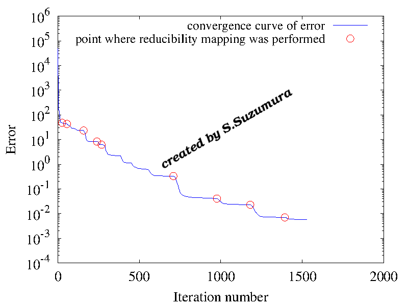
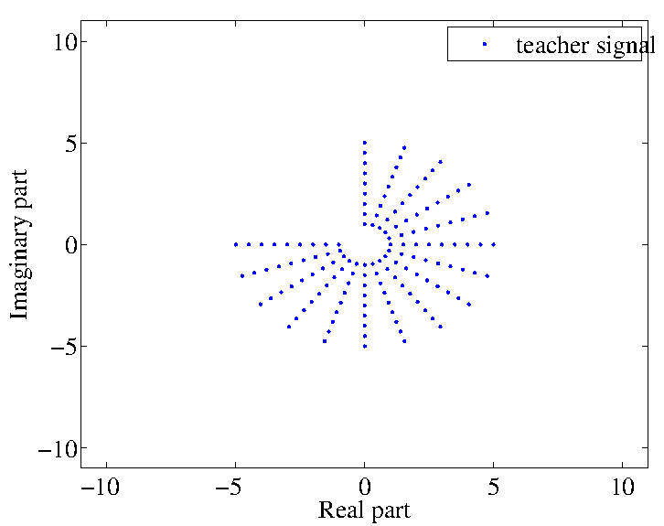
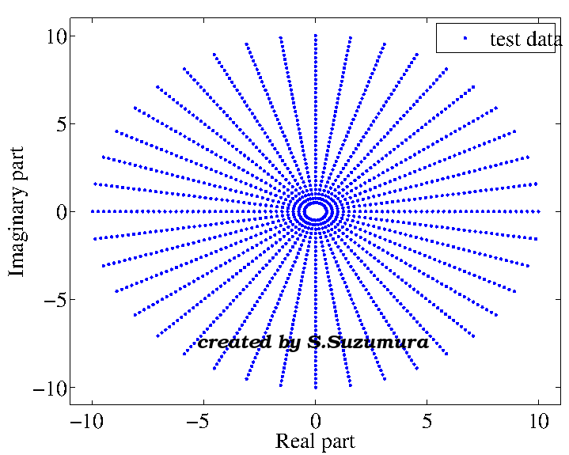
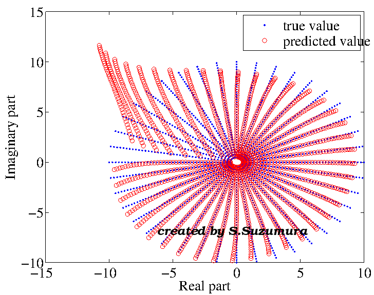
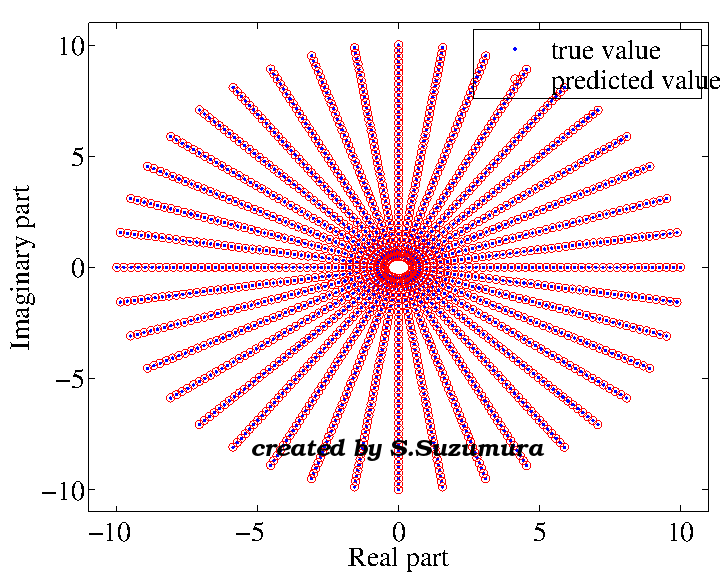

複素ニューラルネットワークとは
複素ニューラルネットワークは、実ニューラルネットワークの入出力や重みを複素数に拡張したものです。複素数ニューラルネットワークは、周期的な傾向を有するデータを効率良く扱うことができます。例えば、実数の指数関数 exp(x) は単調増加関数ですが、複素関数 exp(x+iy) へ拡張することにより、周期的運動が表現できるようになります。 また、y=0のときexp(x+iy)は実数関数と等しいので、実数上での特性が損なわれるわけではありません。新探索法（可約性写像探索法：Reducibility Mapping Search）
実・複素ニューラルネットワーク共に適用可能な探索法（学習法）として、可約性写像探索法を提案しています。 この探索法は、学習の停滞地点から再学習する手法ですが、初期値をランダムに変更して独立な学習を繰り返す方法と比較して、数１０倍から数１００倍以上速く学習が進められることが分かっています。 また、従来法と同程度以上の汎化性能が得られています。Fig.1 The transition of the objective function when the reducibility mapping was performed.
可約性写像探索法の適用例
図１にベッセル関数を学習させた時の目的関数の減少過程を示しました。
赤い丸にて学習が局所解に陥りますが、可約性写像探索法の適用により、目的関数が更に減少していきます。
実と複素ニューラルネットワークの汎化能力の比較
複素ニューラルネットワークは、周期的な傾向を有するデータに対して、高い汎化能力を発揮します。 図２に学習データ(左図)とテストデータ(右図)を示しました。学習データの第二象限は大きく欠損しているため、テストデータを表現するには高い汎化能力が必要となります。

Fig.2 training data and test data.
テストデータの予測結果
ニューラルネットワークで学習データを学習させた後、テストデータを予測した結果を図３に示しました。左図が実ニューラルネットワーク、右図が複素ニューラルネットワークの出力値で、出力値は赤の丸で示されます。


Fig.3 predicated value of the test data (by real-valued and complex-valued NN).
実ニューラルネットワークでは、テストデータを十分に表現することが出来ていません。
実ニューラルネットワークを用いて周期性を学習させることは、少量のデータでは困難に思われます。
一方で、複素ニューラルネットワークでは、テストデータを十分に表現できました。